صفحة 1103 كلمة · نسبة التشكيل 0.02
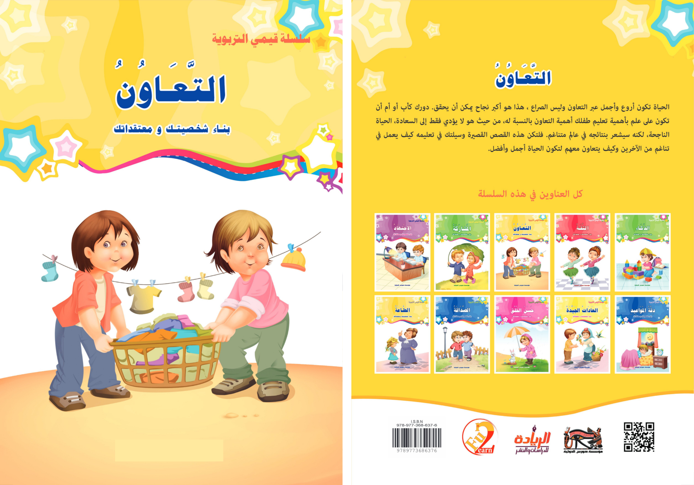
سلسلة قيمي التربوية التَّعَاوُنُ بناء شخصيتك و معتقداتك التّعَاوُنُ الحياة تكون أروع وأجمل عبر التعاون وليس الصراع ، هذا هو أكبر نجاح يمكن أن يحقق. دورك كأب أو أم أن تكون على علم بأهمية تعليم طفلك أهمية التعاون بالنسبة له، من حيث هو لا يؤدي فقط إلى السعادة، الحياة الناجحة، لكنه سيشعر بنتائجه في عالم متناغم. فلتكن هذه القصص القصيرة وسيلتك في تعليمه كيف يعمل في تناغم من الآخرين وكيف يتعاون معهم لتكون الحياة أجمل وأفضل. كل العناوين في هذه السلسلة الذكاء الثقة التعاون المشاركة الاجتهاد دقة المواعيد العادات الجيدة حسن الخلق الصداقة الطاعة I.S.B.N 978-977-368-637-6 9789773686376 الريادة للدراسات والنشر مؤسسة حورس الدولية
صفحة 2108 كلمة · نسبة التشكيل 0.22
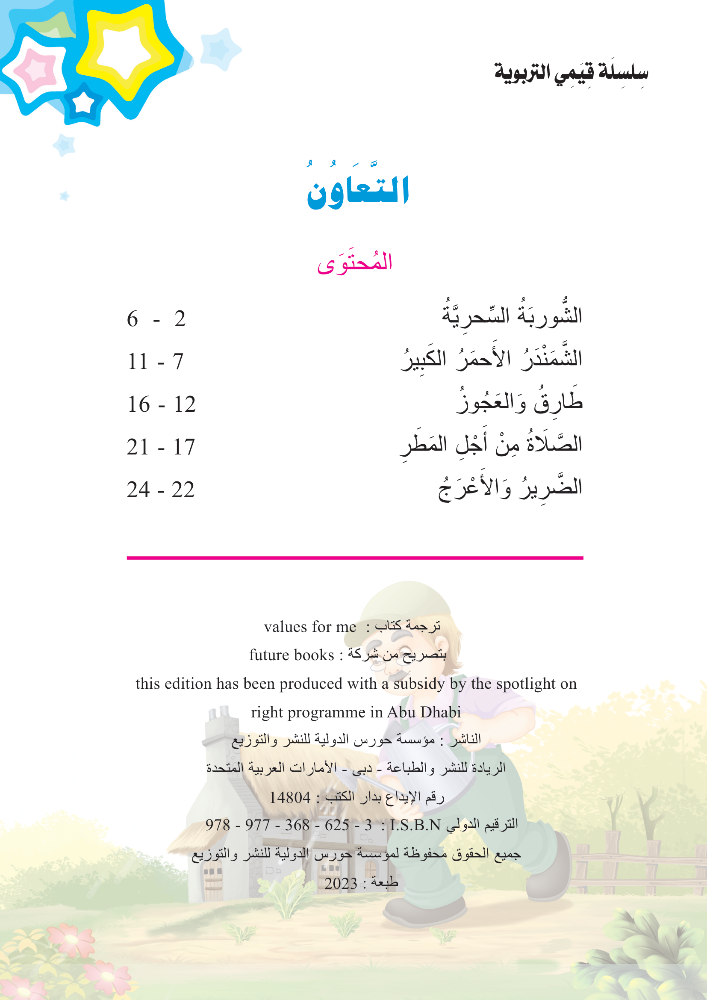
سِلسِلَةَ قِيَمِي التربوية التعاوُنُ المُحتَوَى الشُّورَبَةُ السَّحرِيَّةُ 6 - 2 الشَّمَنْدَرُ الأَحْمَرُ الكَبِيرُ 11 - 7 طَارِقُ وَالعَجُوزُ 16 - 12 الصَّلَاةُ مِنْ أَجْلِ المَطَرِ 21 - 17 الضَّرِيرُ وَالأَعْرَجُ 24 - 22 ترجمة كتاب : values for me بتصريح من شركة : future books this edition has been produced with a subsidy by the spotlight on right programme in Abu Dhabi الناشر : مؤسسة حورس الدولية للنشر والتوزيع الريادة للنشر والطباعة - دبي - الأمارات العربية المتحدة رقم الإيداع بدار الكتب : 14804 الترقيم الدولي I.S.B.N : 978 - 977 - 368 - 625 - 3 جميع الحقوق محفوظة لمؤسسة حورس الدولية للنشر والتوزيع طبعة : 2023
صفحة 337 كلمة · نسبة التشكيل 0.82
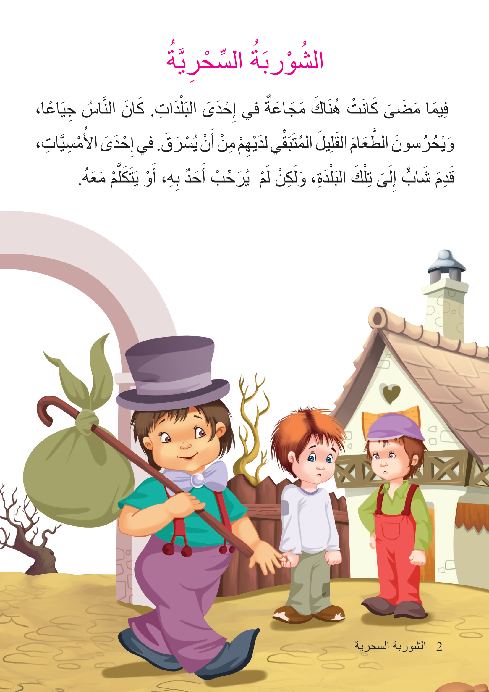
اَلشُّوْرَبَةُ السَّحْرِيَّةُ فِيمَا مَضَى كَانَتْ هُنَاكَ مَجَاعَةٌ فِي إِحْدَى الْبَلْدَاتِ. كَانَ النَّاسُ جِيَاعًا، وَيَحْرُسُونَ الطَّعَامَ القَلِيلَ المُتَبَقِّي لَدَيْهِمْ مِنْ أَنْ يُسْرَقَ. فِي إِحْدَى الأُمْسِيَّاتِ، قَدِمَ شَابٌّ إِلَى تِلْكَ البَلْدَةِ، وَلَكِنْ لَمْ يُرَحِّبْ أَحَدٌ بِهِ، أَوْ يَتَكَلَّمْ مَعَهُ.
صفحة 441 كلمة · نسبة التشكيل 0.71
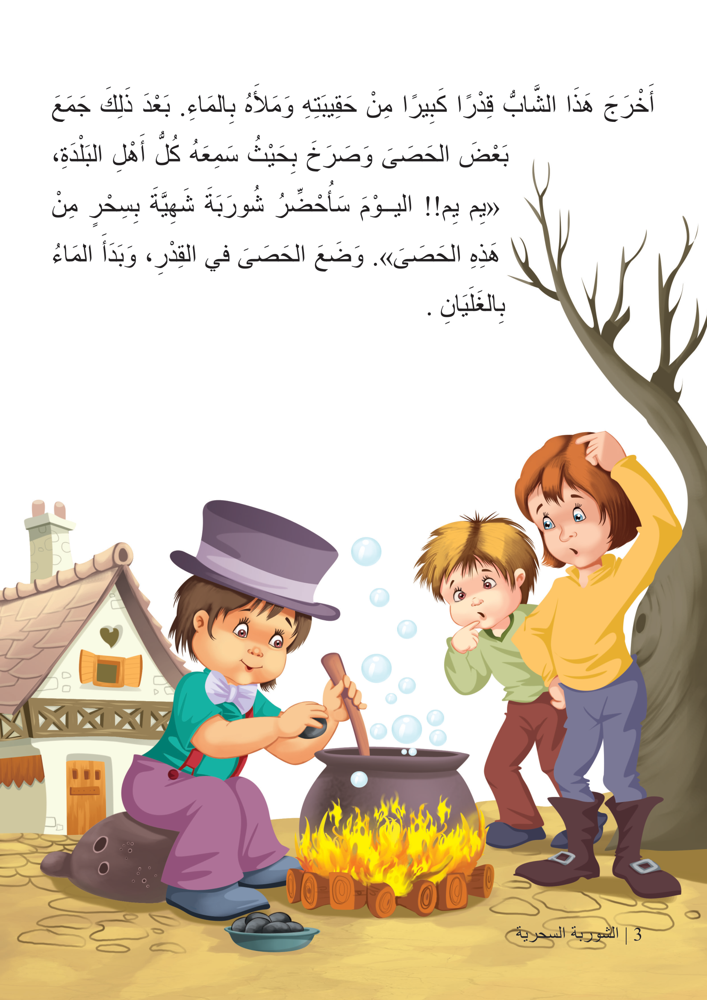
أَخْرَجَ هَذَا الشَّابُّ قِدْرًا كَبِيرًا مِنْ حَقِيبَتِهِ وَمَلَأَهُ بِالمَاءِ. بَعْدَ ذَلِكَ جَمَعَ بَعْضَ الحَصَى وَصَرَخَ بِحَيْثُ سَمِعَهُ كُلُّ أَهْلِ البَلْدَةِ، «يم يم!! اليَوْمَ سَأُحَضِّرُ شُورَبَةَ شَهِيَّةً بِسِحْرِ مِنْ هَذِهِ الحَصَى». وَضَعَ الحَصَىٰ في القِدْرِ، وَبَدَأَ المَاءُ بِالغَلَيَانِ . | الشوربة السحرية
صفحة 549 كلمة · نسبة التشكيل 0.73
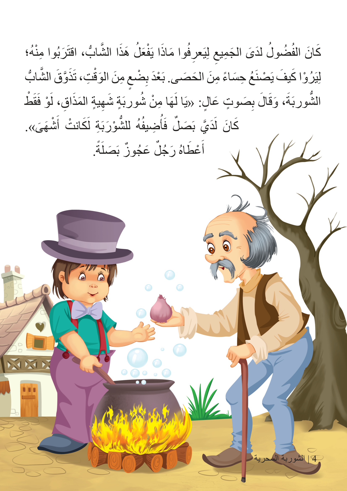
كَانَ الْفُضُولُ لَدَىَ الجَمِيع لِيَعْرِفُوا مَاذَا يَفْعَلُ هَذَا الشَّابُّ، اقْتَرَبُوا مِنْهُ؛ لِيَرَوْا كَيْفَ يَصْنَعُ حِسَاءً مِنَ الحَصَى. بَعْدَ بِضْعِ مِنَ الوَقْتِ، تَذَوَّقَ الشَّابُّ الشُّوربَةَ، وَقَالَ بِصَوتٍ عَالٍ: «يَا لَهَا مِنْ شُوربَةٍ شَهِيَةِ المَذَاقِ، لَوْ فَقَطْ كَانَ لَدَيَّ بَصَلٌ فَأُضِيفُهُ لِلشُّورَبَةِ لَكَانَتْ أَشْهَىَ». أَعْطَاهُ رَجُلٌ عَجُوزٌ بَصَلَةً. | الشوربة السحرية
صفحة 631 كلمة · نسبة التشكيل 0.69
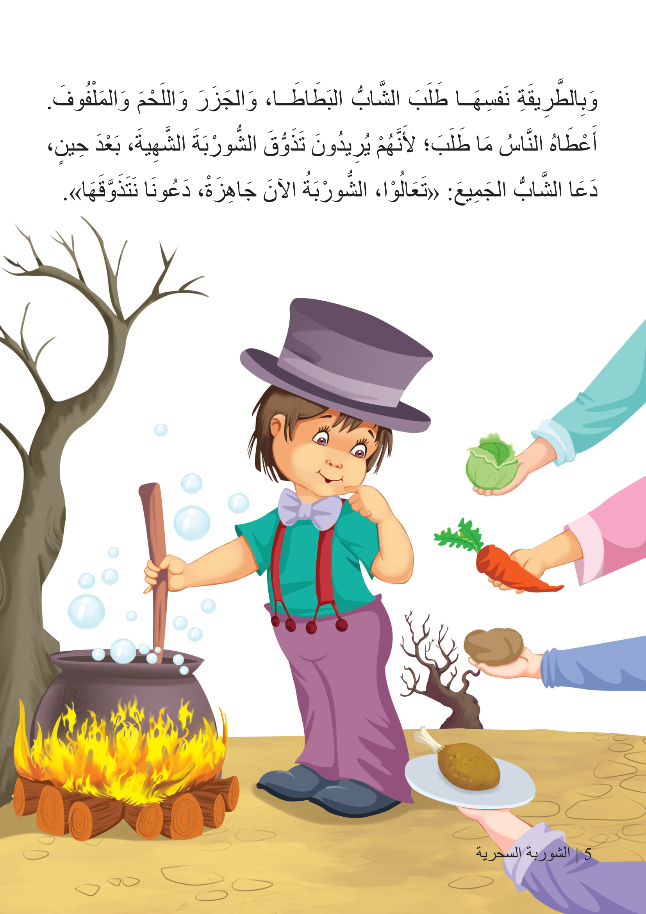
وَبِالطَّرِيقَةِ نَفْسِهَا طَلَبَ الشَّابُّ البَطَاطَا، وَالجَزَرَ وَاللَّحْمَ وَالمَلْفُوفَ. أَعْطَاهُ النَّاسُ مَا طَلَبَ؛ لِأَنَّهُمْ يُرِيدُونَ تَذَوُّقَ الشُّورْبَةِ الشَّهِيَّةِ، بَعْدَ حِينٍ، دَعَا الشَّابُّ الجَمِيعَ: «تَعَالَوْا، الشُّورْبَةُ الآنَ جَاهِزَةٌ، دَعُونَا نَتَذَوَّقَهَا». | الشوربة السحرية
صفحة 742 كلمة · نسبة التشكيل 0.75
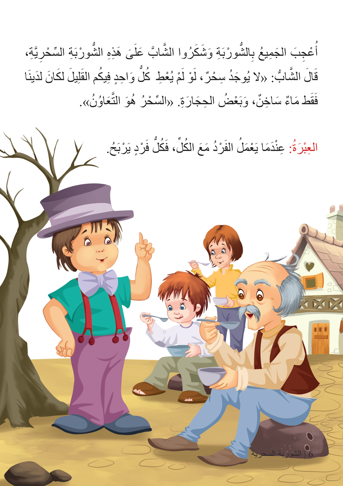
أُعْجِبَ الجَمِيعُ بِالشُّورَبَةِ وَشَكَرُوا الشَّابَّ عَلَى هَذِهِ الشُّورَبَةِ السِّحْرِيَّةِ، قَالَ الشَّابُّ: «لا يُوجَدُ سِحْرٌ، لَوْ لَمْ يُعْطِ كُلُّ وَاحِدٍ فِيكُم القَلِيلَ لَكَانَ لَدَيْنَا فَقَط مَاءٌ سَاخِنٌ، وَبَعْضُ الحِجَارَةِ. «السِّحْرُ هُوَ التَّعَاوُنُ». العِبْرَةُ: عِنْدَمَا يَعْمَلُ الفَرْدُ مَعَ الكُلِّ، فَكُلُّ فَرْدٍ يَرْبَحُ. الشَّوْرَبَة السحرية
صفحة 820 كلمة · نسبة التشكيل 0.61
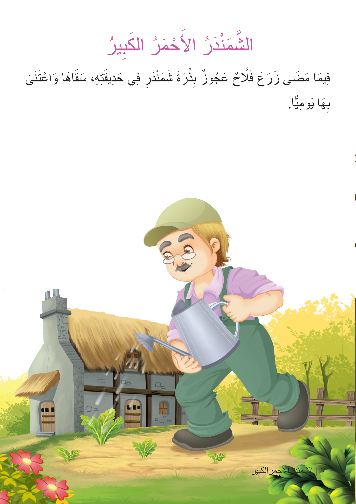
اَلشَّمَنْدَرُ الأَحْمَرُ الكَبِيرُ فِيمَا مَضَى زَرَعَ فَلَّاحٌ عَجُوزٌ بِذْرَةَ شَمَنْدَرٍ فِي حَدِيقَتِهِ، سَقَاهَا وَاعْتَنَى بِهَا يَومِيًّا. | الشمندر الأحمر الكبير
صفحة 923 كلمة · نسبة التشكيل 0.74
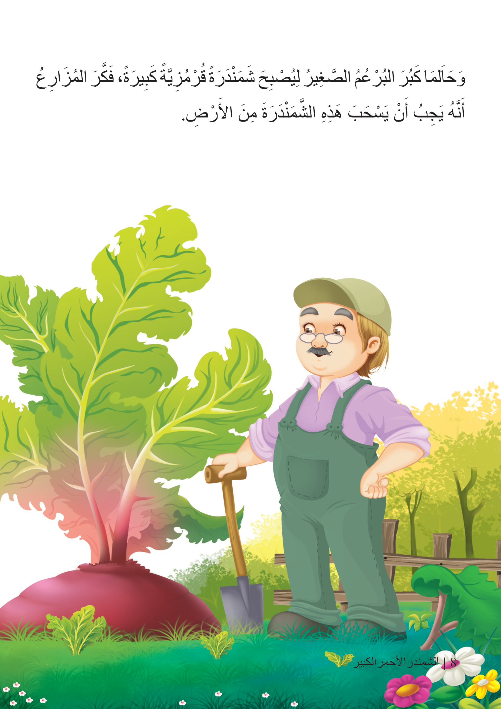
وَحَالَمَا كَبُرَ الْبُرْعُمُ الصَّغِيرُ لِيُصْبِحَ شَمَنْدَرَةً قُرْمُزِيَّةً كَبِيرَةً، فَكَّرَ الْمُزَارِعُ أَنَّهُ يَجِبُ أَنْ يَسْحَبَ هَذِهِ الشَّمَنْدَرَةَ مِنَ الْأَرْضِ. 8 | الشمندر الأحمر الكبير
صفحة 1030 كلمة · نسبة التشكيل 0.72
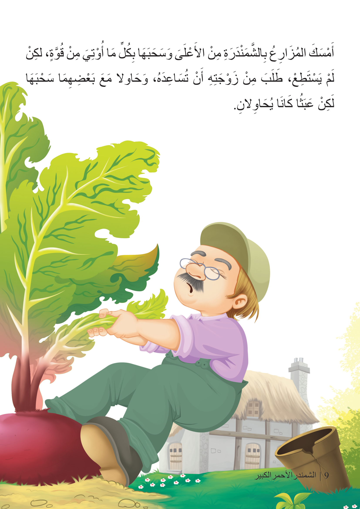
أَمْسَكَ الْمُزَارِعُ بِالشَّمَنْدَرَةِ مِنْ الأَعْلَىَ وَسَحَبَهَا بِكُلِّ مَا أُوْتِيَ مِنْ قُوَّةٍ، لكِنْ لَمْ يَسْتَطِعْ، طَلَبَ مِنْ زَوْجَتِهِ أَنْ تُسَاعِدَهُ، وَحَاوَلا مَعَ بَعْضِهِمَا سَحْبَهَا لَكِنْ عَبَثًا كَانَا يُحَاوِلانِ. الشمندر الأحمر الكبير
صفحة 1117 كلمة · نسبة التشكيل 0.75
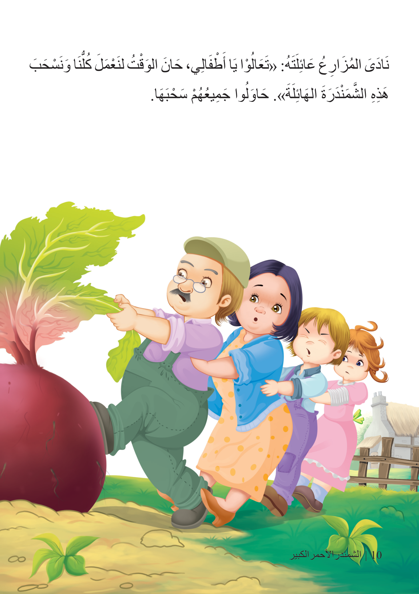
نَادَى الْمُزَارِعُ عَائِلَتَهُ: «تَعَالَوْا يَا أَطْفَالِي، حَانَ الوَقْتُ لِنَعْمَلَ كُلُّنَا وَنَسْحَبَ هَذِهِ الشَّمَنْدَرَةَ الهَائِلَةَ». حَاوَلُوا جَمِيعُهُمْ سَحْبَهَا.
صفحة 1236 كلمة · نسبة التشكيل 0.68
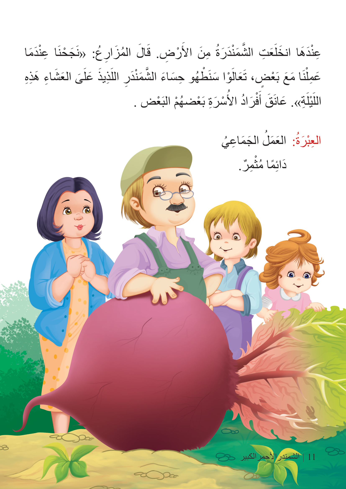
عِنْدَهَا انْخَلَعَتِ الشَّمَنْدَرَةُ مِنَ الْأَرْضِ. قَالَ الْمُزَارِعُ: «نَجَحْنَا عِنْدَمَا عَمِلْنَا مَعَ بَعْضٍ، تَعَالَوْا سَنَطْهُو حِسَاءَ الشَّمَنْدَرِ اللَّذِيذَ عَلَى العَشَاءِ هَذِهِ اللَّيْلَةِ». عَانَقَ أَفْرَادُ الأُسْرَةِ بَعْضَهُمْ البَعْض . العِبْرَةُ: العَمَلُ الجَمَاعِيُّ دَائِمًا مُثْمِرٌ. | الشمندر الأحمر الكبير
صفحة 1317 كلمة · نسبة التشكيل 0.71
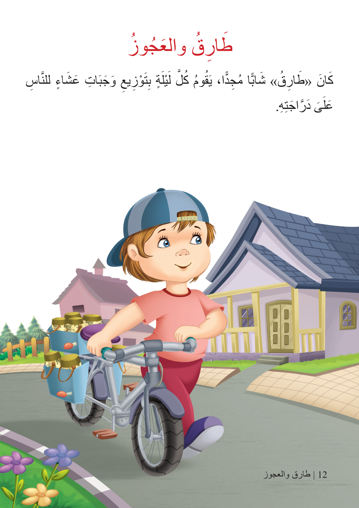
طَارِقُ وَالعَجُوزُ كَانَ «طَارِقُ» شَابًّا مُجِدًّا، يَقُومُ كُلَّ لَيْلَةٍ بِتَوْزِيعِ وَجَبَاتِ عَشَاءِ لِلنَّاسِ عَلَىٰ دَرَّاجَتِهِ. طارق والعجوز
صفحة 1431 كلمة · نسبة التشكيل 0.75
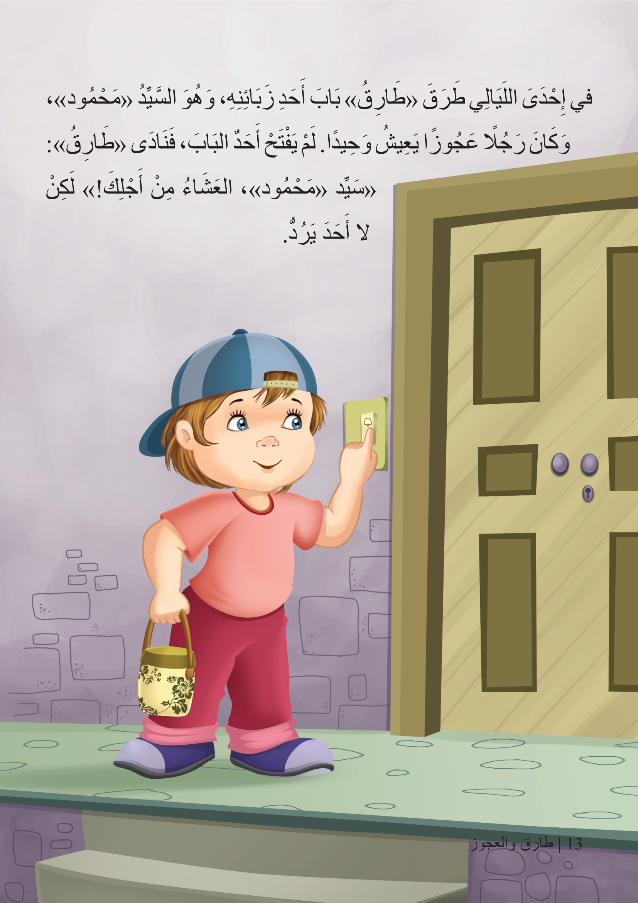
في إِحْدَى اللَّيَالِي طَرَقَ «طَارِقٌ» بَابَ أَحَدِ زَبَائِنِهِ، وَهُوَ السَّيِّدُ «مَحْمُود»، وَكَانَ رَجُلًا عَجُوزًا يَعِيشُ وَحِيدًا. لَمْ يُفْتَحْ أَحَدٌ البَابَ، فَنَادَى «طَارِقٌ»: «سَيِّد «مَحْمُود»، العَشَاءُ مِنْ أَجْلِكَ!» لَكِنْ لا أَحَدَ يَرُدُّ.
صفحة 1534 كلمة · نسبة التشكيل 0.87
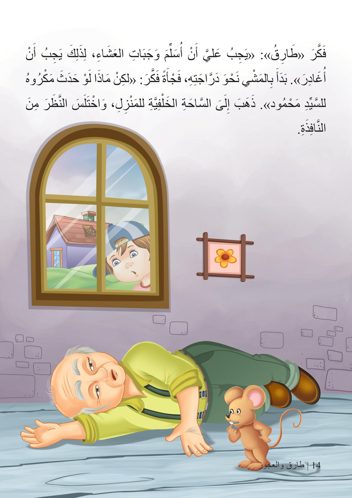
فَكَّرَ «طَارِقُ»: «يَجِبُ عَلَيَّ أَنْ أُسَلِّمَ وَجَبَاتِ العَشَاءِ، لِذَلِكَ يَجِبُ أَنْ أُغَادِرَ». بَدَأَ بِالمَشْيِ نَحْوَ دَرَّاجَتِهِ، فَجْأَةً فَكَّرَ: «لكِنْ مَاذَا لَوْ حَدَثَ مَكْرُوهٌ لِلسَّيِّدِ مَحْمُود». ذَهَبَ إِلَى السَّاحَةِ الخَلْفِيَّةِ لِلمَنْزِلِ، وَاخْتَلَسَ النَّظَرَ مِنَ النَّافِذَةِ.
صفحة 1626 كلمة · نسبة التشكيل 0.78
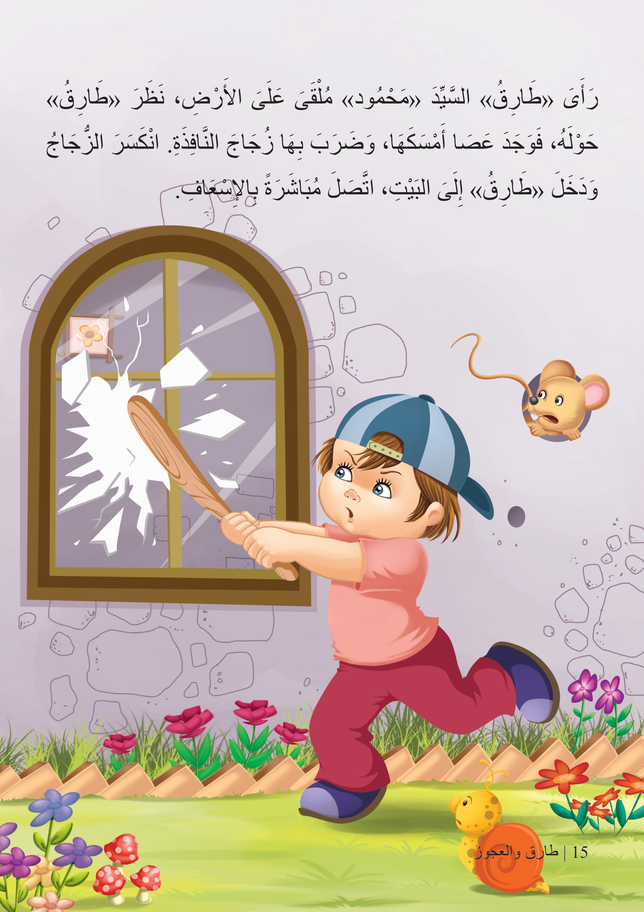
رَأَى «طَارِقُ» السَّيِّدَ «مَحْمُود» مُلْقَى عَلَى الأَرْضِ، نَظَرَ «طَارِقُ» حَوْلَهُ، فَوَجَدَ عَصَا أَمْسَكَهَا، وَضَرَبَ بِهَا زُجَاجَ النَّافِذَةِ. انْكَسَرَ الزُّجَاجُ وَدَخَلَ «طَارِقُ» إِلَى البَيْتِ، اتَّصَلَ مُبَاشَرَةً بِالإِسْعَافِ.
صفحة 1739 كلمة · نسبة التشكيل 0.80
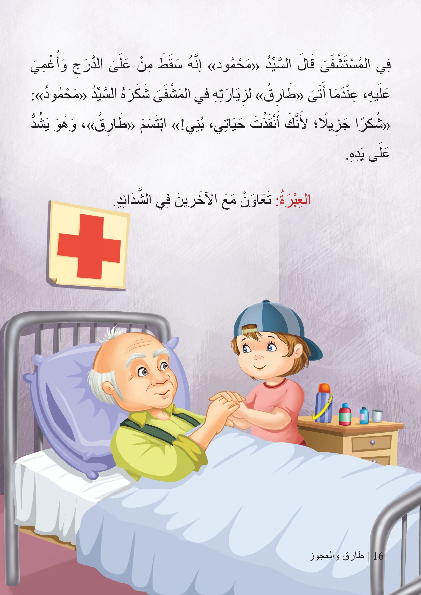
فِي الْمُسْتَشْفَى قَالَ السَّيِّدُ «مَحْمُود» إِنَّهُ سَقَطَ مِنْ عَلَى الدَّرَجِ وَأُغْمِيَ عَلَيْهِ، عِنْدَمَا أَتَى «طَارِقُ» لِزِيَارَتِهِ فِي المَشْفَى شَكَرَهُ السَّيِّدُ «مَحْمُودُ»: «شُكْرًا جَزِيلًا؛ لِأَنَّكَ أَنْقَذْتَ حَيَاتِي، بُنِي!» ابْتَسَمَ «طَارِقُ»، وَهُوَ يَشُدُّ عَلَى يَدِهِ. العِبْرَةُ: تَعَاوَنْ مَعَ الآخَرِينَ فِي الشَّدَائِدِ.
صفحة 1820 كلمة · نسبة التشكيل 0.75
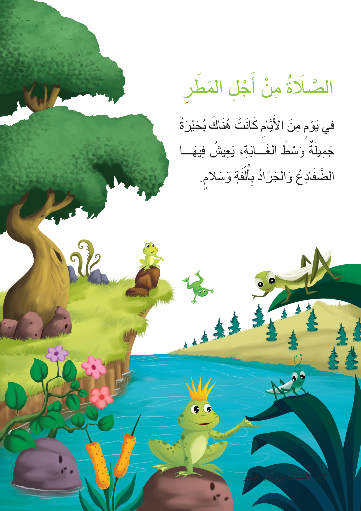
الصَّلَاةُ مِنْ أَجْلِ المَطَرِ فِي يَوْمٍ مِنَ الأَيَّامِ كَانَتْ هُنَاكَ بُحَيْرَةٌ جَمِيلَةٌ وَسَطَ الغَابَةِ، يَعِيشُ فِيهَا الضَّفَادِعُ وَالجَرَادُ بِأُلْفَةٍ وَسَلَامٍ.
صفحة 1926 كلمة · نسبة التشكيل 0.66
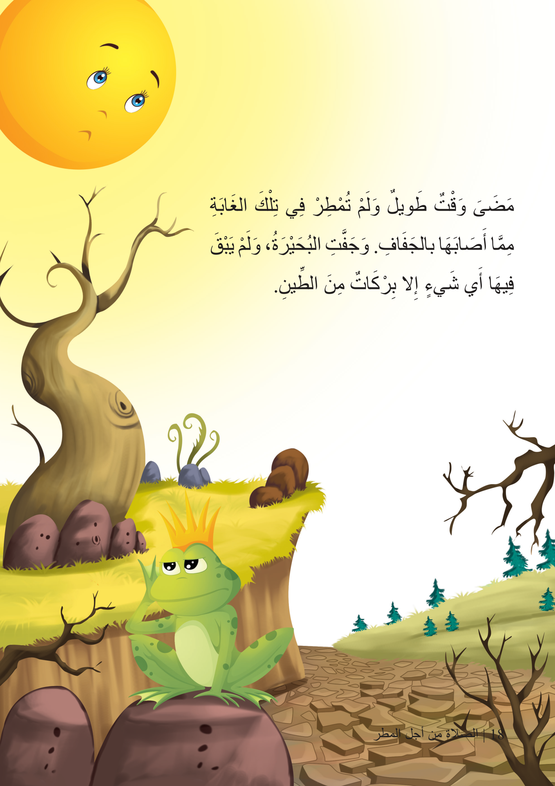
مَضَىَ وَقْتٌ طَوِيلٌ وَلَمْ تُمْطِرْ فِي تِلْكَ الغَابَةِ مِمَّا أَصَابَهَا بِالجَفَافِ. وَجَفَّتِ البُحَيْرَةُ، وَلَمْ يَبْقَ فِيهَا أَي شَيءٍ إِلا بِرْكَاتٌ مِنَ الطِّينِ. الصَّلاة من أجل المطر
صفحة 2019 كلمة · نسبة التشكيل 0.73
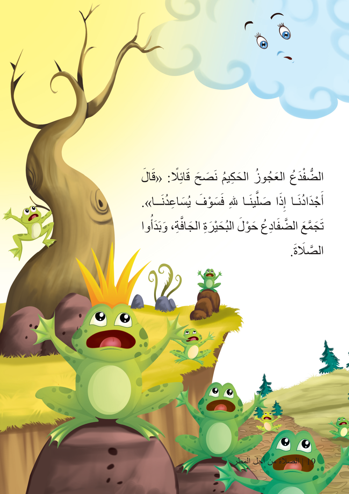
الضُّفْدَعُ العَجُوزُ الحَكِيمُ نَصَحَ قَائِلًا: «قَالَ أَجْدَادُنَا إِذَا صَلَّيْنَا للهِ فَسَوْفَ يُسَاعِدُنَا». تَجَمَّعَ الضَّفَادِعُ حَوْلَ البُحَيْرَةِ الجَافَّةِ، وَبَدَأُوا الصَّلَاةَ.
صفحة 2126 كلمة · نسبة التشكيل 0.67
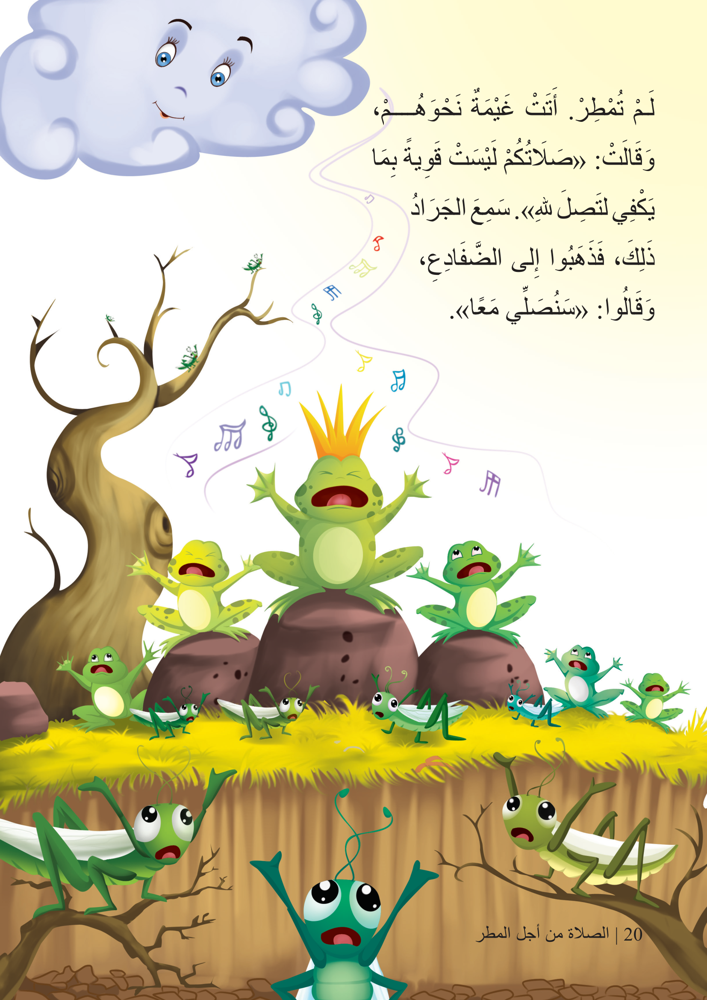
لَمْ تُمْطِرْ. أَتَتْ غَيْمَةٌ نَحْوَهُمْ، وَقَالَتْ: «صَلَاتُكُمْ لَيْسَتْ قَوِيَّةً بِمَا يَكْفِي لِتَصِلَ لله». سَمِعَ الجَرَادُ ذلِكَ، فَذَهَبُوا إِلى الضَّفَادِعِ، وَقَالُوا: «سَنُصَلِّي مَعًا». الصلاة من أجل المطر
صفحة 2235 كلمة · نسبة التشكيل 0.68
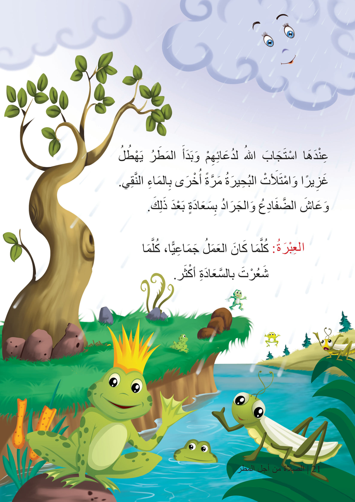
عِنْدَهَا اسْتَجَابَ اللهُ لِدُعَائِهِمْ وَبَدَأَ المَطَرُ يَهْطُلُ غَزِيرًا وَامْتَلَأَتْ البُحَيرَةُ مَرَّةً أُخْرَى بِالمَاءِ النَّقِي. وَعَاشَ الضَّفَادِعُ وَالجَرَادُ بِسَعَادَةٍ بَعْدَ ذَلِكَ. العِبْرَةُ: كُلَّمَا كَانَ العَمَلُ جَمَاعِيًّا، كُلَّمَا شَعَرْتَ بِالسَّعَادَةِ أَكْثَر. 21 | الصلاة من أجل المطر
صفحة 2321 كلمة · نسبة التشكيل 0.71
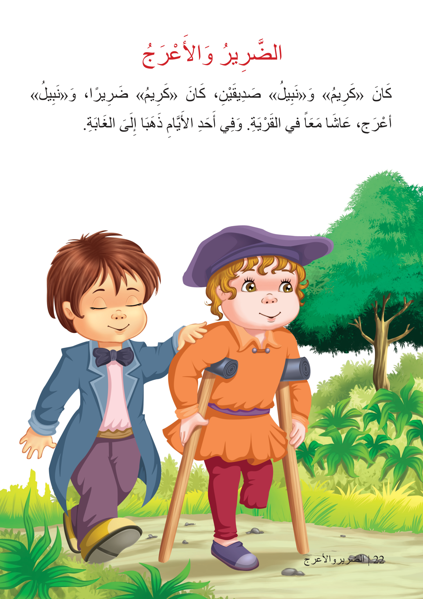
اَلضَّرِيرُ وَالأَعْرَجُ كَانَ «كَرِيمٌ» وَ«نَبِيلٌ» صَدِيقَيْنِ، كَانَ «كَرِيمٌ» ضَرِيرًا، وَ«نَبِيلٌ» أعْرَجَ، عَاشَا مَعًا فِي القَرْيَةِ. وَفِي أَحَدِ الأَيَّامِ ذَهَبَا إِلَى الغَابَةِ.
صفحة 2438 كلمة · نسبة التشكيل 0.71
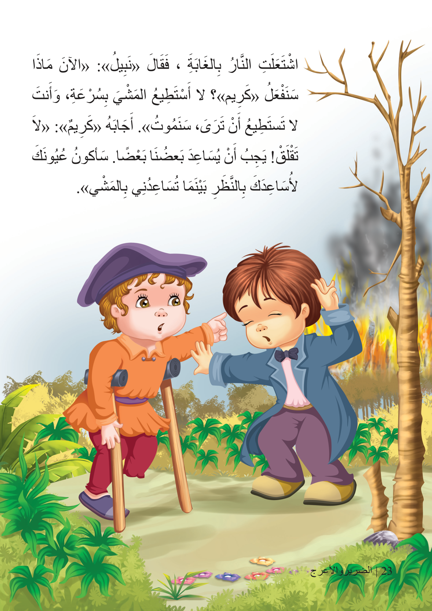
اِشْتَعَلَتِ النَّارُ بِالغَابَةِ ، فَقَالَ «نَبِيلُ»: «الآنَ مَاذَا سَنَفْعَلُ «كَرِيم»؟ لَا أَسْتَطِيعُ المَشْيَ بِسُرْعَةٍ، وَأَنْتَ لَا تَسْتَطِيعُ أَنْ تَرَى، سَنَمُوتُ». أَجَابَهُ «كَرِيمٌ»: «لَا تَقْلَقْ! يَجِبُ أَنْ يُسَاعِدَ بَعْضُنَا بَعْضًا. سَأَكُونُ عُيُونَكَ لِأُسَاعِدَكَ بِالنَّظَرِ بَيْنَمَا تُسَاعِدُنِي بِالمَشْيِ». الضرير والأعرج
صفحة 2524 كلمة · نسبة التشكيل 0.70
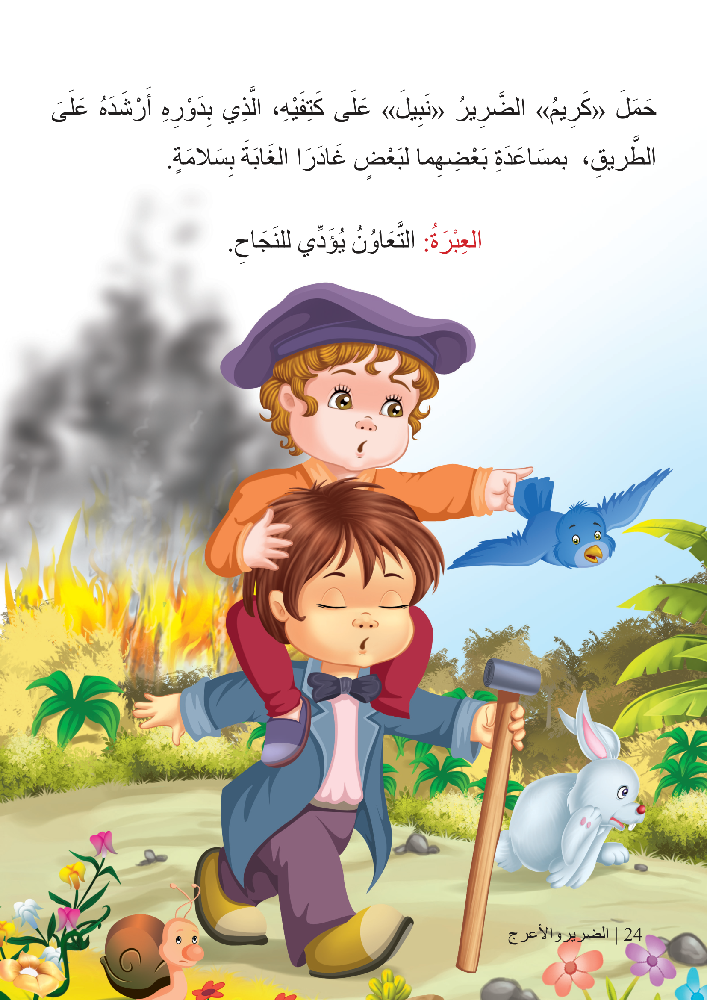
حَمَلَ «كَرِيمُ» الضَّرِيرُ «نَبِيلَ» عَلَى كَتِفَيْهِ، الَّذِي بِدَوْرِهِ أَرْشَدَهُ عَلَى الطَّرِيقِ، بِمَسَاعَدَةِ بَعْضِهِمَا لِبَعْضٍ غَادَرَا الغَابَةَ بِسَلَامَةٍ. العِبْرَةُ: التَّعَاوُنُ يُؤَدِّي لِلنَّجَاحِ. | الضرير والأعرج